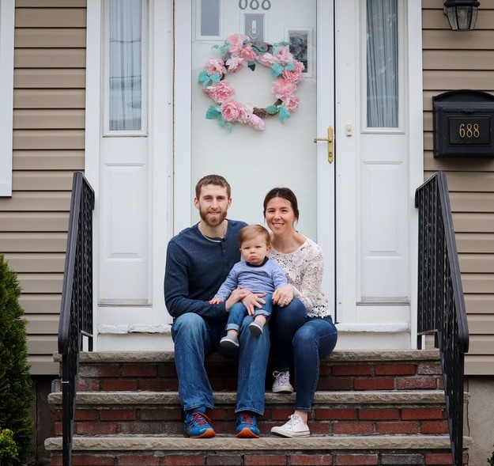
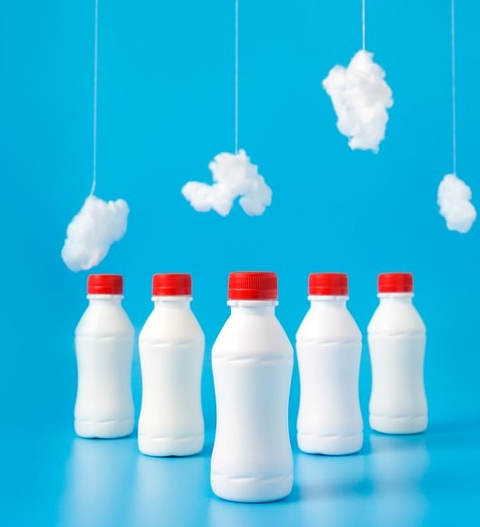

About Photographer
I was born in Istanbul in 1978. I have lived in Istanbul for my entire education and my corporate business life, which has been going on for many years. When my son (can Mehmet) was born in 2010, I heve started to take pictures of him as a hobby, and when I started photography training and got my own camera, it was my biggest dream to turn the photography into my work. I had the opportunity to advance my hobby by shooting near me for a long time. In 2019, my interest in photography and the desire to pursue our dreams as a family with 40 years of age was the first step of my dream in the UK with Earth Photography, leaving both my corporate business life and the country I live in. About to meet you through my own lens.
Our Services
Wedding pictures
Wedding shoot The bride and groom preparation phase includes preparation with family members,wedding ceremony shoot and post-wedding party shoot.
Special Days
Celebration shoots cover all kinds of celebrations.Graduations,and party shoots that you will take at home or in different venues.You can create photo stories for your most specilal days and add new ones to your memories.
Newborn baby photo shoot with natural light in your own home within the first 15 days after birth.shooting accessories are brought by the photographer.If desired,baby's item can also be used durung shooting.
Portraits And Family Photoshoot
Family shooting includes shoots of family members in studio or open spaces.Family gatherings,picnic,and barbecue parties,breakfast,mothers and fathers days.Christmas and any special occasion.You can add new memories and leave great memoriesto the next generations by shooting one by one and together for the whole family.
Portrait photography can be done as single,paired or multiple optionaly.
Private And Business Event
Corporate shots Indoor and outdoor shots that will reflect the corporate identity of your company to your customers and business partners more clearly and convey the corporate face of your company. shooting of departments, executive team, personnel, technical service, etc. covers shots. Shooting begins by taking shape according to the requests of individuals and organizations. The photos taken can be used in the website, presentations, launches, billboards, catalogs and magazines. Product shooting Includes shots made to explain all the details of your product and make a positive impact on the consumer. The photos taken can be used on the website, social media, catalogs, brochures and menus.
Event shoots include such as store opening,festivals,concerts,outdoor and indoor hall events.The day of the event is the shooting that covers the whole day and the details are weighted.The photos have taken,can be used in the website,press,social media and presentations.
Catalogue Products And Moddeling Photoshoot
Product shooting Includes shots made to explain all the details of your product and make a positive impact on the consumer. The photos taken can be used on the website, social media, catalogs, brochures and menus.
When all photos are finished editing,all photos taken in USB are sent to the address.




Contact
We offer full-service photography for any event, large or small. We understand your needs and we will cater the services to satisfy the biggest criteria of them all, both look and style. Do not hesitate to contact us.
Earth Photography ltd| Flat 3 pennycort |Ringwood BH24 1JH
You can also contact us by phone 07379616713 or email deryaakkus@earthphotography.co.uk
Also follow us on